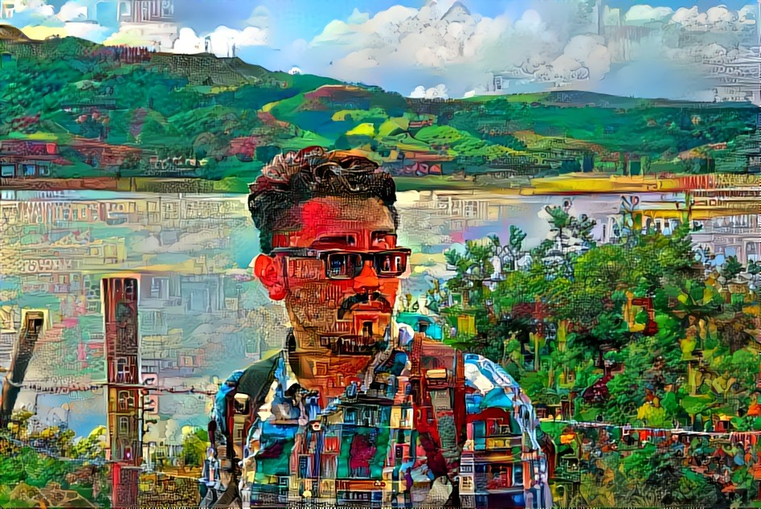

Sobre las relaciones a distancia . . .
Porque todos nos hemos planeteado la posibilidad de mantener vivo el amor cuando hay oceanos que literalmente hacen todo más complicado.
Pre - Malviaje
20190319
Seguimos juntos y todo está bien pero solo podemos estar abrazados ante la inminente destrucción que puede caer canal abajo. Nuestro único curso de acción es mirar a la tormenta de frente y sacar una sombrilla, esparando que las ventiscas no la destruyan en menos de un año.
Y si, la gente va a decir, va a mirar y juzgar; Pero es que ellos no saben lo chimba que es estar con vos. Ellos no sabn que el vinculo que compartimos va mucho más allá de una simple apariencia. Los dos hacemos el mejor de los equipos y vale muhco la pena luchar por conservar algo tan iridiscente e incondicional.
Que bello es recordar cuando el cariño era más tranquilo . . .
Primera caida
20190501
Ha pasado un mes y tuvimos un inconveniente denso. Si bien una de las dos partes fue el autor material del atentado, las dos partes fueron autores intelectuales. No dejar claro desde el principio lo que se siente en cuanto a necesidades más instintivas lleva a problemas y malentendidos en el futuro de cualquier relación. Las mentiras son termitas en la cabaña que intentamos construir y depende de los dos erradicarlaas desde la raiz.
La distancia ya es grande para seguir agrandandola entre ambos y cualquiera de los dos que la cague solo va a llevar a más y más resentimiento. Estar lejos nos quita la posibilidad de forjar nuevas memorias y nuevos recuerdos juntos y cada vez que alguno decide pasar por encima de lo pactado afecta el proceso de manera casi que irreversible. Vamos a necesitar mucho esfuerzo para poder superar todos nuestros vicios y no dejar que nos dañen más de lo que ya estamos. entendernos es fundamental para mantener una relación asi como la comunicacion es la escencia de todo este circo de emociones.
Tu mirada confusa refleja soledad, Sueños indolentes y deseos relativos. Tu caminar no es en vano siempre sabes a dónde vas.
A la biblioteca al parecer . . .
Deconstrucción de la alegría
20190501
Hemos tratado de abordar la relación desde todos los ambitos que acaecen en cuanto a ella. Notamos que ante cualquier eventualidad es mejor contruirse cada uno por aparte antes de siquiera pensar en una vids juntos. No podemos pretender domar al otro en cualidades más primitivas y eso es algo con lo que tenemos que vivir. Las libertades sexuales son distintas a la promiscuidad porque no son mutuamente implicativas: puedes ser promiscuo por ser libre pero no libre al ser promiscuo. El dónde pinta cada uno esa linea es lo que me pone impaciente, en donde pierdo los estribos y no puedo contener una picazón en el alma que me intranquiliza. Si bien nos damos libertades, que se conviertan en cotidianidad es un tema más sensible.
Desligarnos del sexo es bueno y trae sus defectos. Si por una parte nos hace sentir bien y nos da la forma de sbrellevar esto en el tiempo, por otra nos insensibiliza hacia el tema, haciendo que el sexo con otro sea casi que automático, que no se necesite conocer a la otra parte del evento para consumarlo y el sexo con el ser amado también pase a ser protocolario. Todo es chimbita si sabemos donde se pinta la linea y donde es correcto ser sincero con el otro.
A partir de esto construimos lo que somos como pareja y a partir de esto podemos sacar la relación adelante. Hablemos, de todo. De como te sientes, de como hueles el día, de cuantas ganas tienes y de que color te vestirás. Hablemos de nuestros anhelos y esperanzas y de cuanto estamos dispuestos a dejar atras por el otro. De cuanto pensamos crecer antes de pensar en crecer con otro. Hay que deconstruir un poco lo que nos hace felices y lo que hayamos en el otro que tanto nos emboba. Entendamos que es loq ue nos enamora del otro y como podemos salvarlo y preservarlo en el tiempo.
Me da miedo cuando sales . . . sonriendo pa' la calle . . porque todos pueden ver . . .los hoyuelitos que te salen.
N O S T A L G I A
20190603
Estamos llevandolo bien y hemos manejado los problemas hasta el punto de reducir todos los obstáculos a uno; Hasta remarcar la composición misma del problema: la distancia y lo que se dejo atrás. Hemos manejado las situaciones una por una hasta que llegamos a la ultima e irrevocable ausencia del otro. La situación de tener que condicionarlo todo a la comunicación es un camino que si bien hemos recorrido exitosamente, es una linea delgada que puede fallar con falta de iniciativa de cualquiera de los interesados.
¿Está bien sentirse triste y enojado, con un plonsito de impotencia? No. Pero tampoco esta bien reprimir el sentimiento al negarlo o aun peor, callarlo y ya. Hay que formar habitos y conductas sanas al rededor de nuestra nueva vida que nos ayuden a pilotear la ausencia del otro. El truco no esta en no sentirnos mal, sino en saber reponerse de ello con ayuda del otro (o bien solo).
La nostalgia de lo que se deja atras por un beneficio maypr es un sentimiento que no va a desaparecer tampoco, pero en este caso la gracia es no dejar que se convierta en arrepentimiento. El enojo no debe ir hacia uno mismo por tomar una decision que lo aleja a uno de lo que ama; Despues de todo lo unico lamentable es que se deba recurrir a ello para logar una mejoría notable. No es un error haber tomado X o Y decision, es un error haber tomado una decisión para después retractarse sin haberlo intentado.
Contigo aprendi a amar. Con todo lo lindo y lo doloroso que ello trae.
Escribámonos pendejaditas
No todo nos lo debemos guardar. No todo nos lo debemos callar. Mantengamos viva la llama y alimentemos lo que no debe morir.
El autor
Formación en astronomía y física computacional con gusto musical variado. Fan del humor negro, la juventud en decadencia y opositor de la censura.
Twitter feed
Tweets by un_genio_masAprender Python

Curso experimental en python para aprendices con poca experiencia en programación.
Follow Me